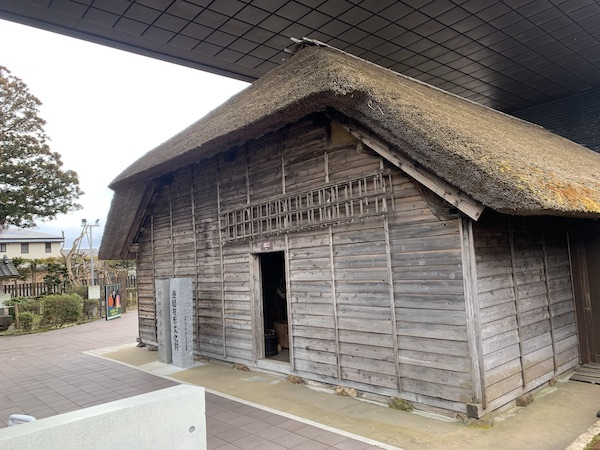
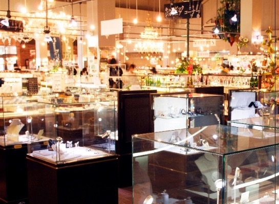

Hideyo Noguchi Memorial Hall
Hideyo Noguchi was born in Inawashiro, Fukushima Prefecture in 1876 (Meiji 9). At the age of one and a half years, he suffered a severe burn on his left hand, but with the encouragement and support of his teacher, friends and family, he overcome his hardship.
With the surgery on my left hand, he realized the beauty of medicine, and hisself decided to go for medicine. He has been active around the world at the Rockefeller Medical Institute in the United States and has been nominated for the Nobel Prize.
World Glass Hall
A collection of handmade glass products from all over the world, and a selection of 25,000 items, including directly imported products from around the world and original products, are on display at once.
The numerous glassware on display will create a mysterious and beautiful space. The grounds include the Inawashiro local beer hall where you can enjoy the Inawashiro local beer, which won the Gold Prize of the International Beer Grand Prize, and the Inawashiro Okashikan where local sweets and sweets are collected. There are plenty of fun-filled facilities.